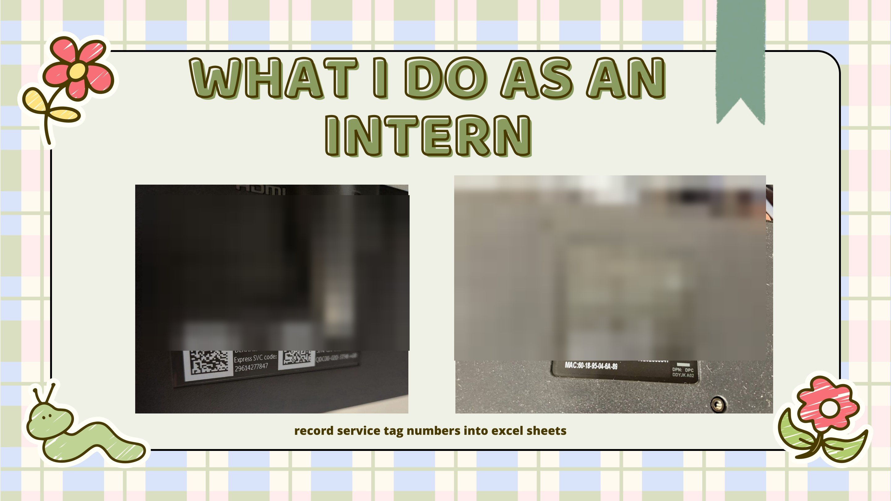
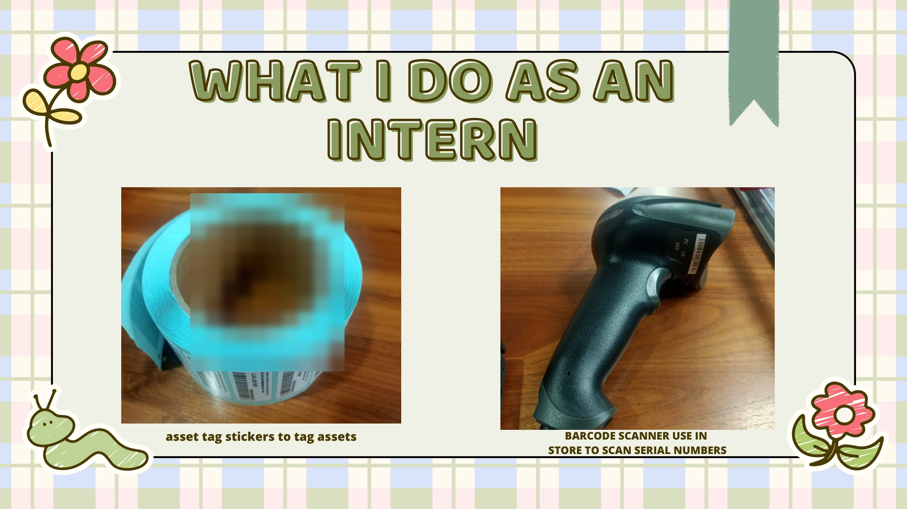
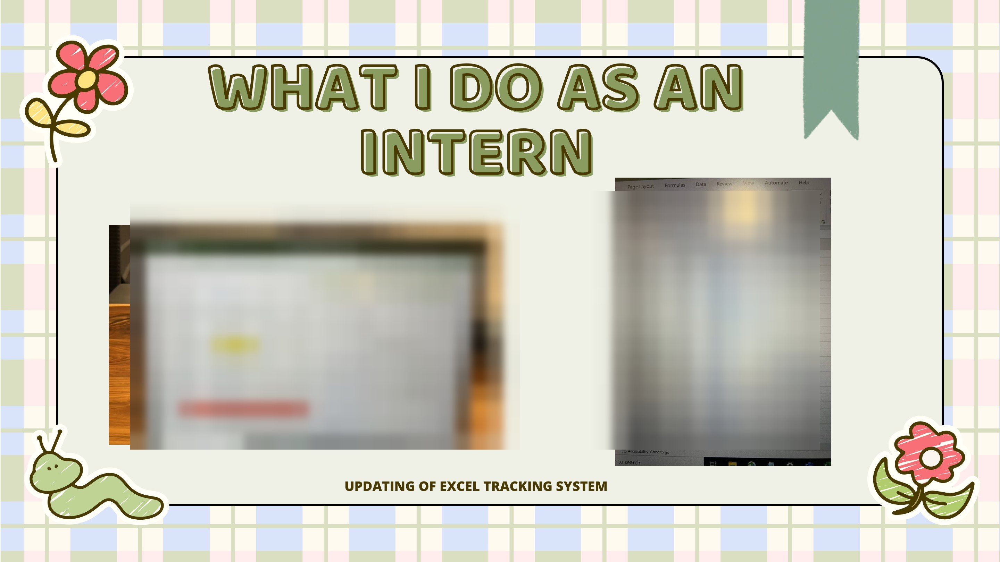
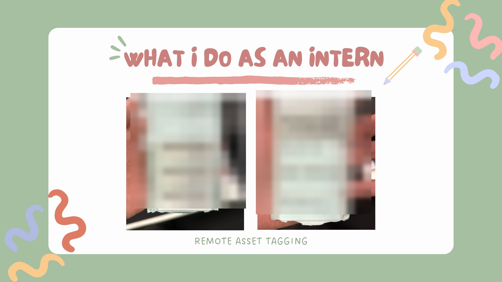
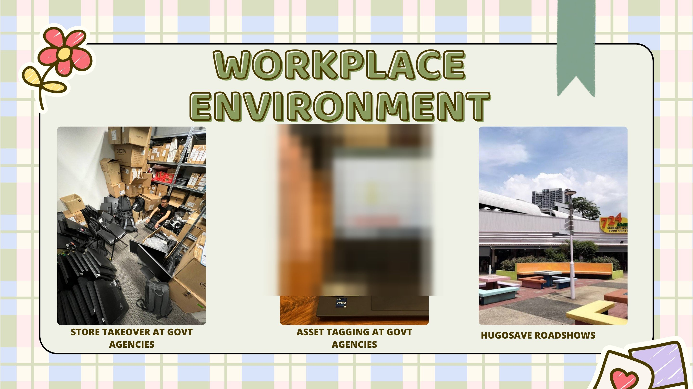
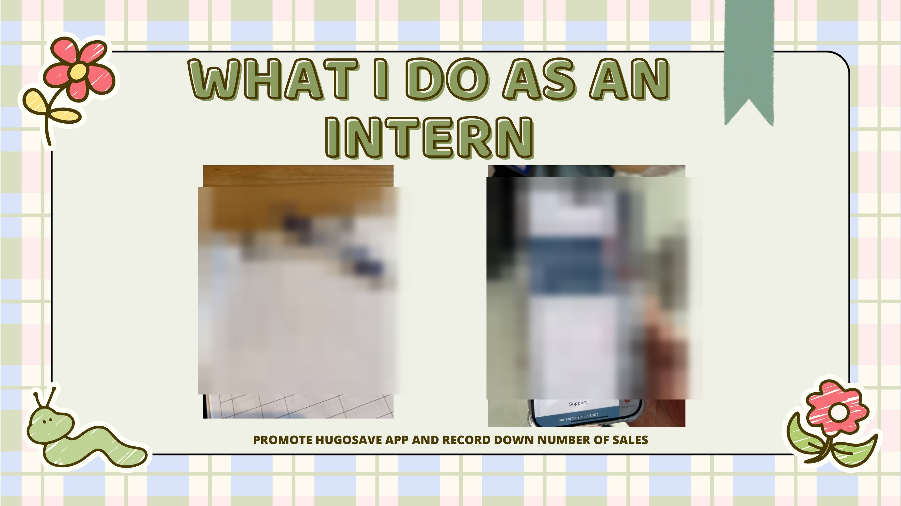
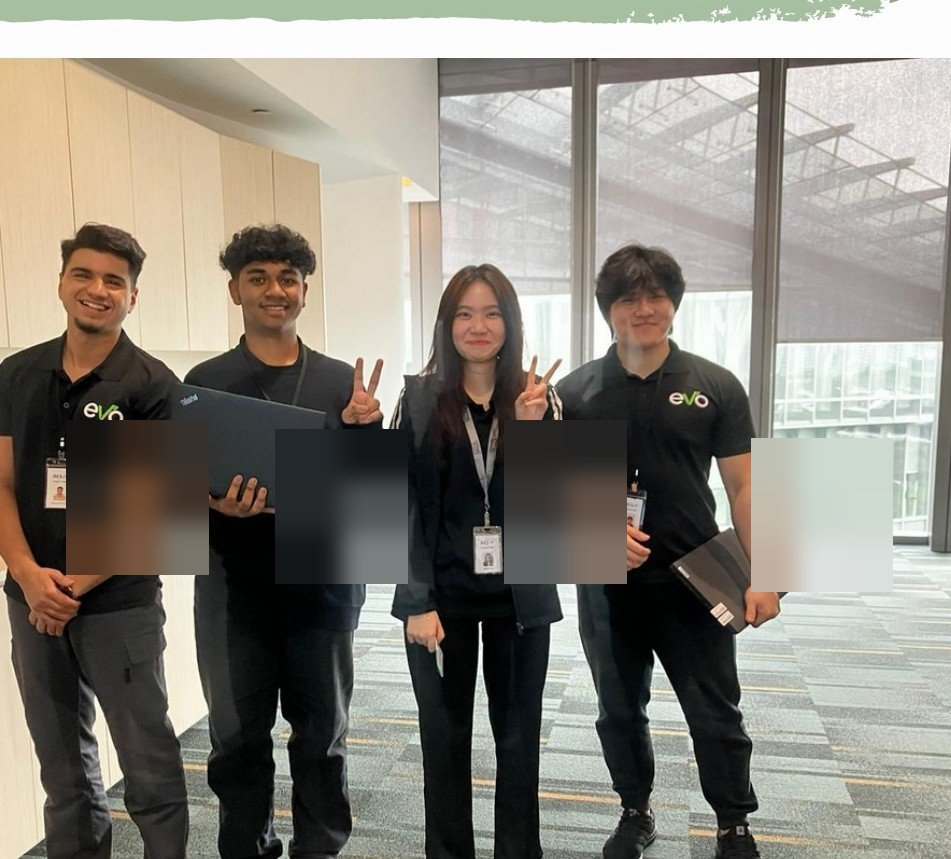

▦
Asset tagging & inventory
Tagged IT equipment, checked physical inventory and used barcode scanners to record and verify asset information.
INDUSTRIAL ATTACHMENT / WORK EXPERIENCE
My internship at EVO Outsourcing Solutions gave me a chance to work with IT assets, tracking records and project teams in a real workplace.
01 / OVERVIEW
EVO Outsourcing Solutions provides IT services and technology support. During my industrial attachment, I helped with the day-to-day work involved in tracking, checking and maintaining IT asset records.
I worked with physical equipment and tracking systems, and saw why accurate information, good communication and clear progress updates matter when supporting projects.
02 / RESPONSIBILITIES
My role involved a mix of hands-on asset checks, recording information and supporting other team activities.
Tagged IT equipment, checked physical inventory and used barcode scanners to record and verify asset information.
Recorded equipment service-tag numbers and updated asset tracking sheets to keep inventory information organised.
Reported progress on assigned asset-related tasks and coordinated with the team as work moved forward.
Supported asset tagging at government-agency sites and helped with remote tagging and store-related activities.
Assisted with stock checks and store operations as part of the wider asset management work.
Helped promote the HugoSave app during roadshow activities and recorded the number of sales.
03 / MY INTERNSHIP IN PHOTOS
Photos from my industrial attachment showing the different tasks, places and people I worked with. Sensitive equipment identifiers and workplace records have been obscured.
Recording service tags, checking equipment, using asset labels and keeping track of inventory.




I also supported store and on-site activities and helped promote the HugoSave app at roadshows.


A few memories from the office and time spent working with the team.



04 / TAKEAWAYS
The internship helped me build confidence working with others, managing responsibilities and communicating in a professional environment.
Working with colleagues taught me to ask questions, share updates and clarify tasks.
I learned to adjust to different assignments, from inventory work to on-site support and roadshows.
Keeping records accurate while completing assigned tasks helped me manage my work more carefully.
05 / REFLECTION
My time at EVO gave me a clearer picture of how IT operations are supported behind the scenes. I learned that small details, like correctly tracking an asset or keeping records up to date, make a difference to the team’s work. It was also an opportunity to improve my confidence, teamwork and sense of responsibility.